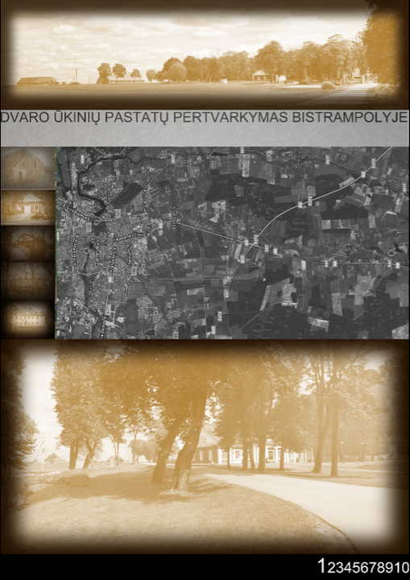
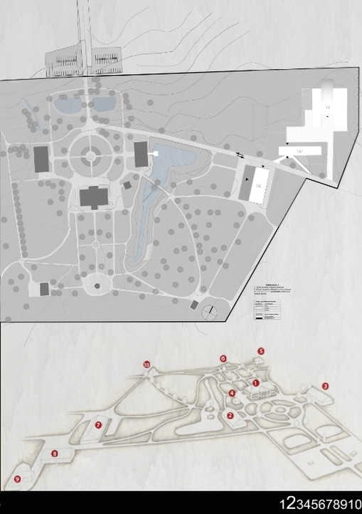
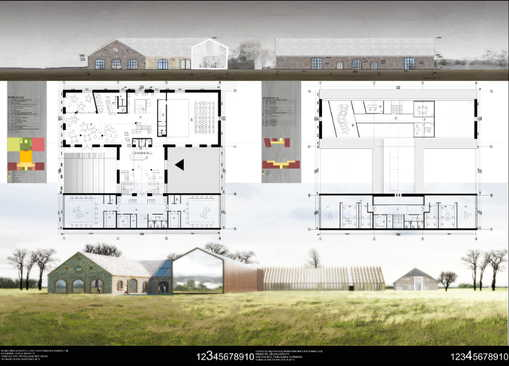
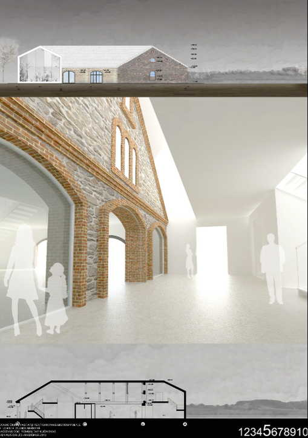
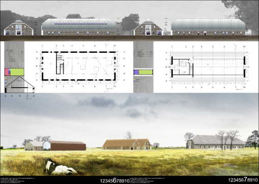
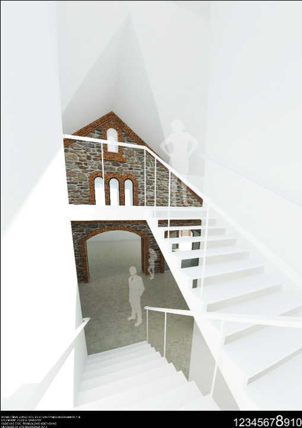

Building locationFormer mansions and country houses and small estates fragments - are very valuable Lithuania cultural heritage. 
Area plan
Cultural Heritage Department only about 14% of Lithuania mansions are renovated and "resurrected" for a new life.
Therefore estates renovation is very actuality theme, examination of which must take into account the interests of many, and the possibilities for their impact on environmental management.
Only when the renovation project ideas generated can be adequately understood.

Front view
Bistrampolis Manor is one of the many abandoned cultural heritage objects.
For example
We will look at how they can be adapted to the new function manor outbuildings.

Interior viewIn the complex there is lingering classical style manor ensemble with 11 buildings, built 1820-50 year. 
Exterior viewWhen writing the work was based on both the Lithuanian scientists work on the monument protection building management adapting new feature and overseas. 
Basement sketchParticularly the works of Brooker remodeling theory of the importance of adapting buildings for re-use.Bistrampolis manor presentation